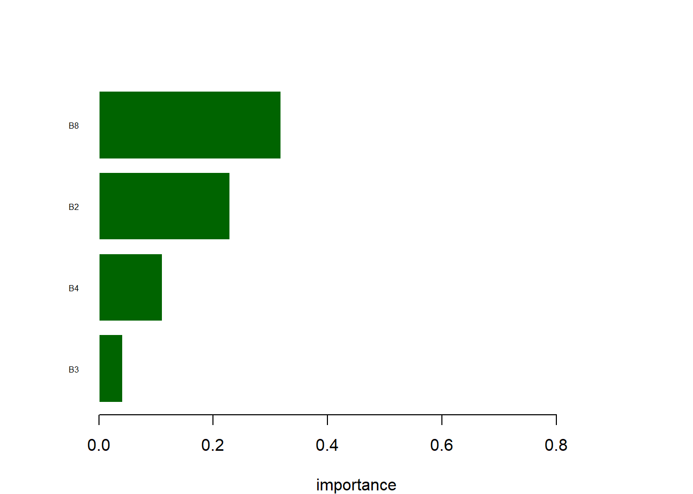
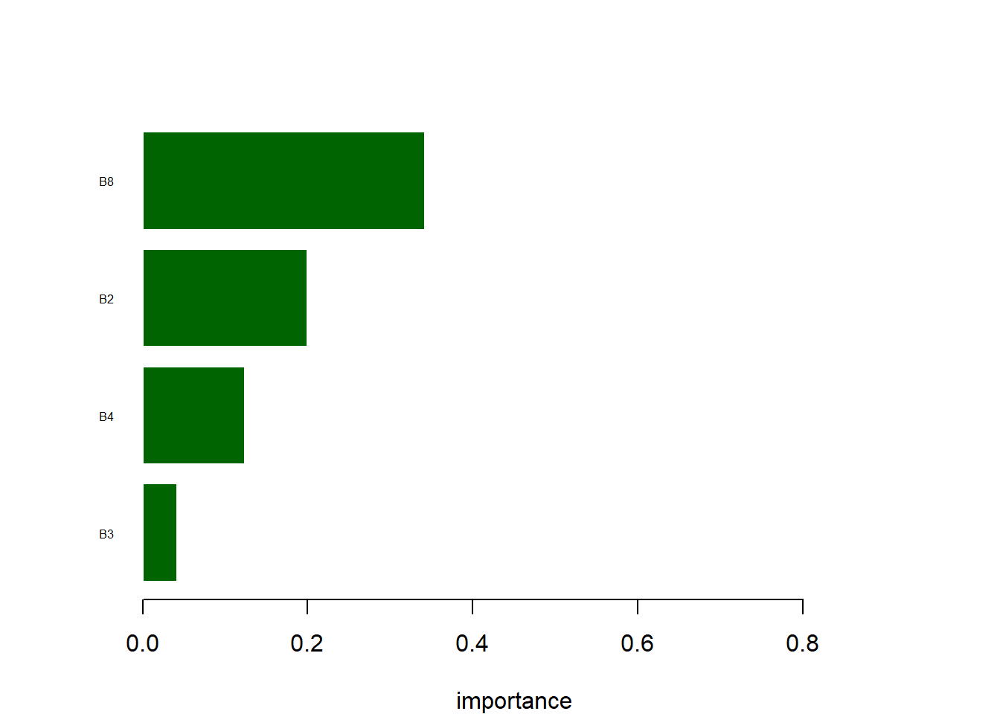
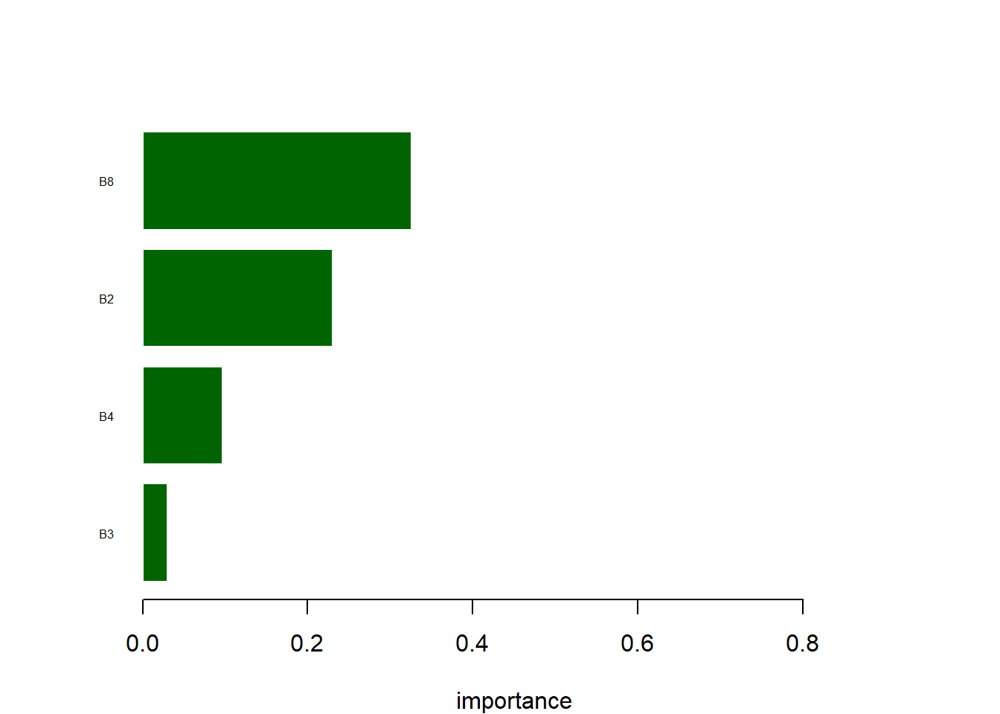
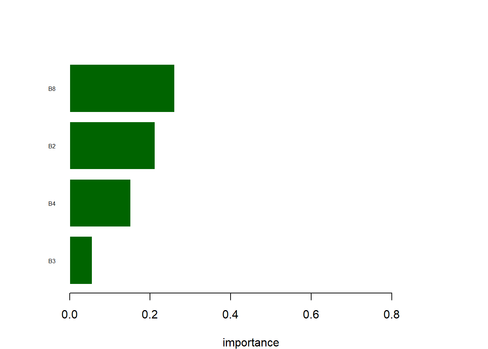
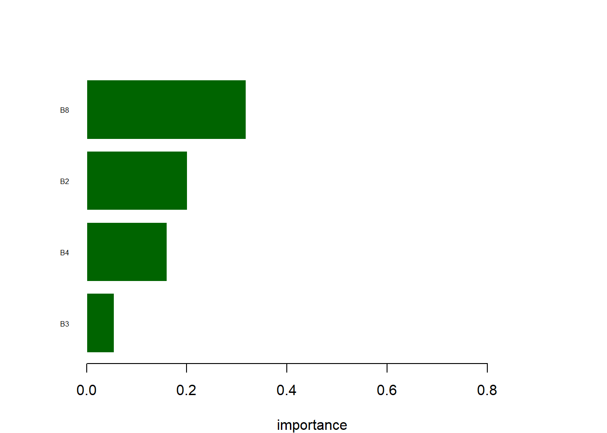
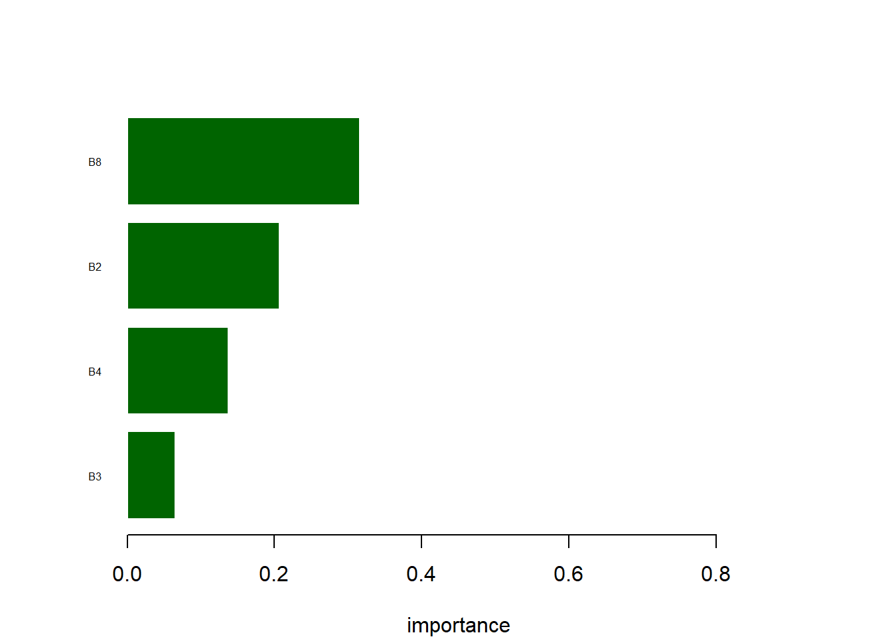
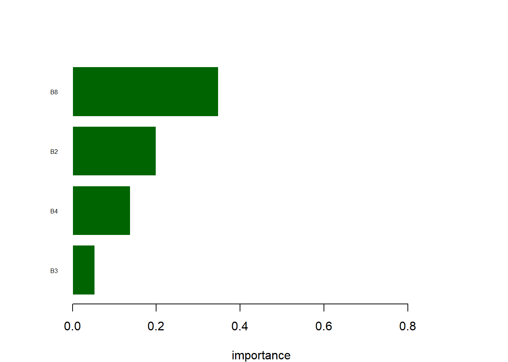
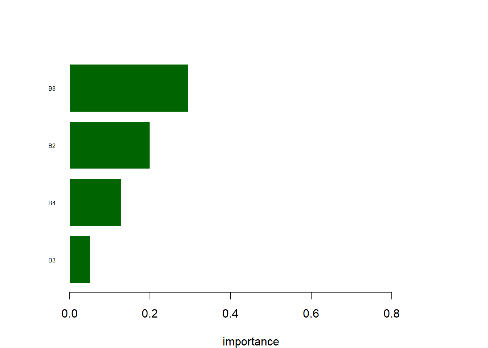
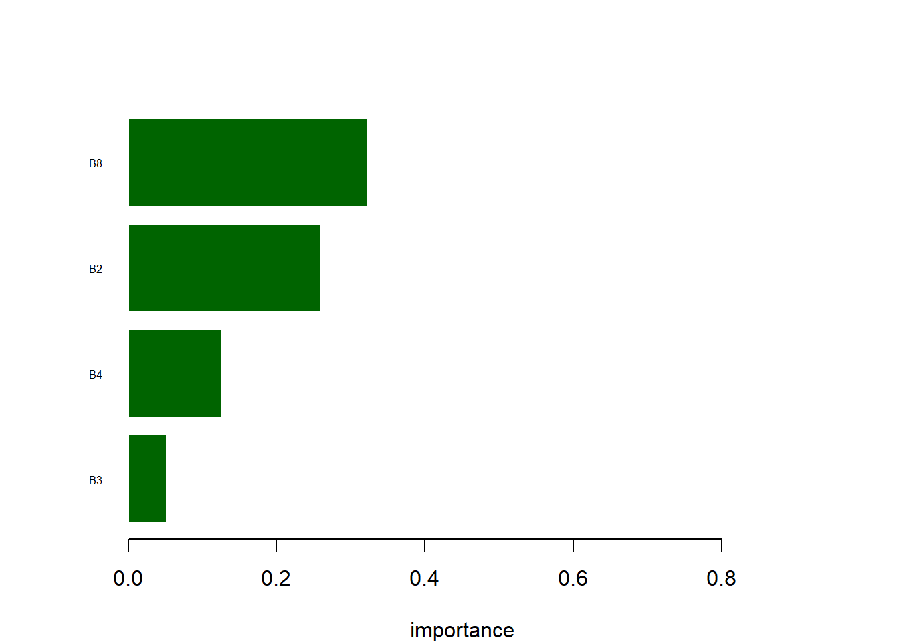

3 Valley scale (vegetation map)
3.1 Extract the pixel values at training point locations
# Load the satellite summer image
sati<-rast("raster_input/s2_adventdalen_20190727_new.tif")
# Load the training data fo the vegetation classes
training= read_sf("datafiles/training_sat.shp")
# Load an extent file for the study area
sat_extent= read_sf("datafiles/goose_survey_1000.shp")
# Extract pixel values at training points
sat_extract<-terra::extract(sati, vect(training))
sat<-cbind(sat_extract, training)
sat$Id<-as.factor(sat$Id)
# Visualize the pixel values for the classes if you want
sat_long<-pivot_longer(sat,
cols = B2:B8 ,
names_to = 'layer',
values_to = 'score')
ggplot() +
geom_boxplot(data= sat_long, aes(x = layer, y=score, fill=Id))3.2 Run the random forest with subsets of the data to check how robust the classification is
#make a simple dataset to reduce to one entry per ground truth point (ID column and class column)
sat_data<-sat
sat_sub_data<-sat_data[,c(1,6)]
sat_sub_data$Id<-as.factor(sat_sub_data$Id)
sat_sub_data<-unique(sat_sub_data)
sat_output<-list()
sat_all.scores<-c()
sat_c_matrix = matrix(0, 3, 3)
sat_all_cm<-c()
for(run.int in 1:30 ){
run<-as.character(run.int)
out_sat <- stratified(sat_sub_data, c("Id"), 0.7)
#create training dataset from the "out dataframe"
sat_training.data<-sat_data[sat_data$ID %in% out_sat$ID,]
#create validation dataset from the remaining data
sat_validation.data<-sat_data[!sat_data$ID %in% out_sat$ID,]
sat_validation.data<-sat_validation.data[,c(2:6)]
#remove rows not to be included
sat_training.data<-sat_training.data[,c(2:6)]
sat_training.data$Id<-as.factor(sat_training.data$Id)
#Run random forest model
M_sat=rminer::fit(Id~.,sat_training.data,model="randomForest", task = "class")
sat_output[[run]]<-list(model=M_sat)
#create dataframe whilst extracting the descriptor
sat_table_res <- as.data.frame(M_sat@object$importance)
#change order of values in column from highest to lowest
sat_table_res_S <- sat_table_res[order(sat_table_res$MeanDecreaseAccuracy),]
#plot the decriptor importance as barplot
par(mar=c(4,5,4,4))
barplot(sat_table_res_S$MeanDecreaseAccuracy,
horiz="TRUE", col="darkgreen", xlab="importance", xlim=c(0,0.9),
names.arg=row.names(sat_table_res_S), cex.names=0.5, las=1, border=F)
sat_output[[run]][["importance"]]<-sat_table_res_S
# use the model to predict the classes in the validation dataset
sat_validation.data$pred.Id=rminer::predict(M_sat,sat_validation.data)
sat_validation.data$Id<-as.factor(sat_validation.data$Id)
# compare predicted versus observed data
sat_c.m<-rminer::mmetric(sat_validation.data$Id, sat_validation.data$pred.Id, metric=c("ALL"))
sat_c.m1<-rminer::mmetric(sat_validation.data$Id, sat_validation.data$pred.Id, metric=c("CONF"))
# add all metrics to outputs and make table
sat_output[[run]][["accuracy"]]<-sat_c.m
sat_all.scores<-rbind(sat_all.scores, sat_c.m)
# make a extra output for confusion matrix and total summed confusion matrix
sat_output[[run]][["cfm"]]<-sat_c.m1$conf
sat_c_matrix<-sat_c_matrix + sat_c.m1$conf
# make a long table with all confusion matrices
sat_all_cm<-rbind(sat_all_cm, sat_c.m1$conf)
}










dev.off()
### Classification scores
sat_all.scores.df<-data.frame(sat_all.scores)3.3 Create vegetation map
## Run the random forest classifier
M_sat=rminer::fit(Id~.,sat[,2:6],model="randomForest", task = "class")
# create dataframe whilst extracting the descriptor
table_res <- as.data.frame(M_sat@object$importance)
# change order of values in column from highest to lowest
table_res_S <- table_res[order(table_res$MeanDecreaseAccuracy),]
# plot the decriptor importance as barplot
par(mar=c(4,5,4,4))
barplot(table_res_S$MeanDecreaseAccuracy,
horiz="TRUE", col="darkgreen", xlab="importance", xlim=c(0,0.9),
names.arg=row.names(table_res_S), cex.names=0.5, las=1, border=F)# Predict the model onto the satellite map
sat_pred<-predict(sati, M_sat)
# Crop the vegetation map to the study extent
sat_crop<-crop(sat_pred, vect(sat_extent))
sat_crop<-mask(sat_crop, vect(sat_extent))
# Save the vegetation map for further processing in sat_grubbing_map
writeRaster(sat_crop, "raster_output/sat_crop_new.tif", overwrite=TRUE)